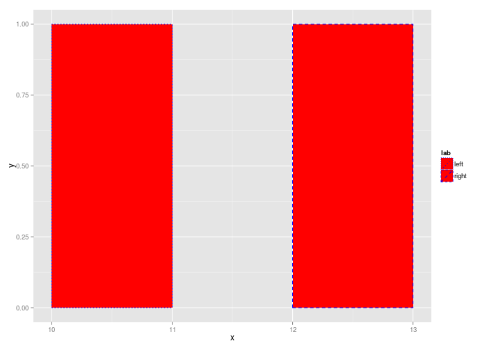
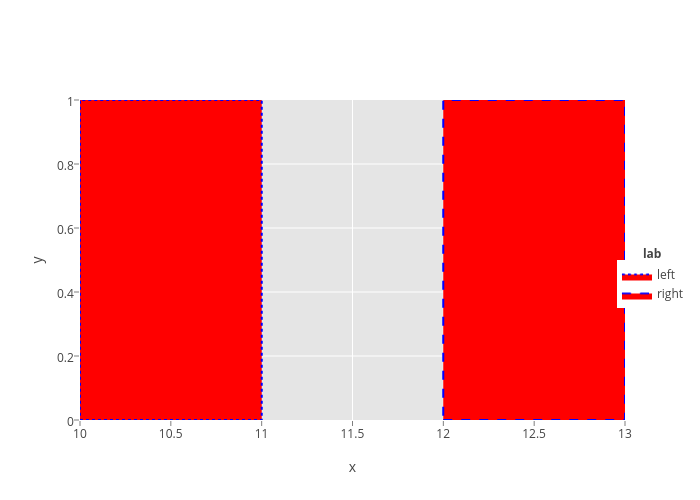

<!-- html table generated in R 3.2.0 by xtable 1.7-4 package -->
<!-- Mon Jun 15 12:00:26 2015 -->
<table border=1>
<tr> <th> test </th> <th> ggplot2 </th> <th> baobao.trace_order </th> <th> master </th>  </tr>
  <tr> <td> area-traces_order </td> <td> <br />  </td> <td> <br />  no-json-file png-md5-diff </td> <td> <br />  no-json-file </td> </tr>
  <tr> <td> density-traces_order </td> <td> <br />  </td> <td> <br />  no-json-file png-md5-diff </td> <td> <br />  no-json-file </td> </tr>
  <tr> <td> polygon-color-fill-aes-linetype </td> <td> <br />  </td> <td> <br />  no-json-file png-md5-diff </td> <td> <br />  no-json-file </td> </tr>
   </table>
